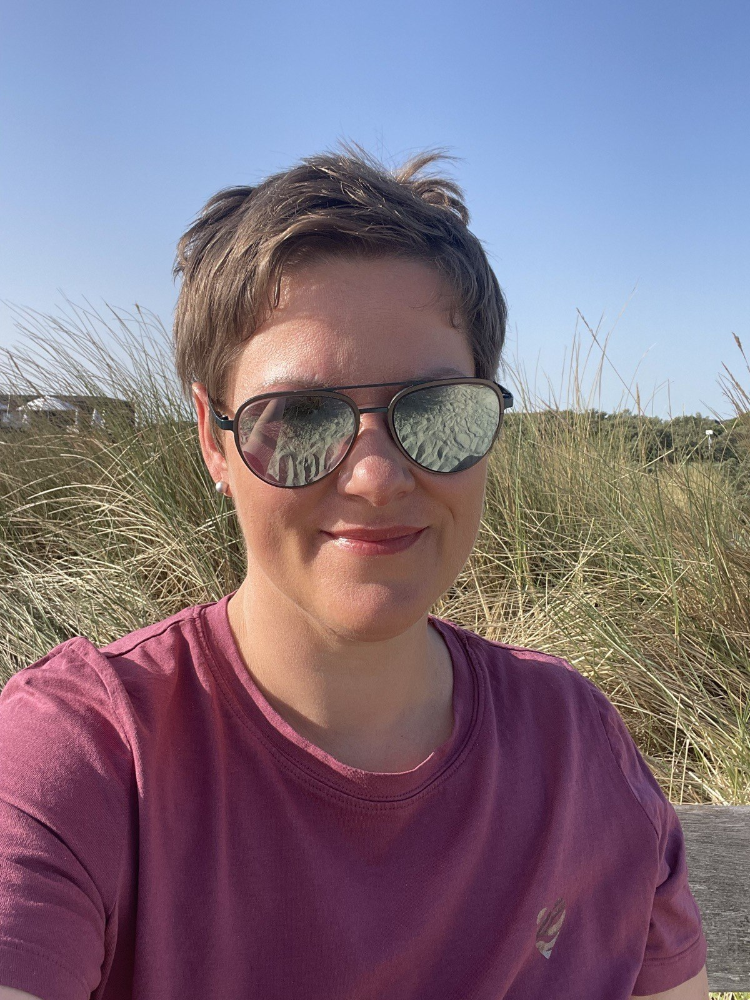

Gratis-Video · Kristin Schnödt
Welches Cupping-System
wirklich zu dir passt.

Silikon oder Glas. Weich oder fest. Klein für die Augenpartie, größer für Wangen und Kiefer. Wer sich zum ersten Mal mit Gesichtscupping beschäftigt, findet vor allem eins: viele verschiedene Systeme und keine klare Antwort, welches davon für das eigene Gesicht überhaupt sinnvoll ist.
Ich zeige dir in diesem Video, worauf es bei der Wahl wirklich ankommt, und warum die falsche Wahl der Grund ist, wenn Cupping bei manchen Frauen einfach nicht wirkt.
Einfach ansehen, sofort verstehen.
Was dich erwartet
-
1
Der Unterschied zwischen den Cupping-Systemen Ich zeige dir, worin sich die gängigen Sets unterscheiden und was das für die Wirkung auf deiner Haut bedeutet.
-
2
Welches System zu welcher Gesichtspartie passt Augen, Wangen, Kiefer und Stirn brauchen unterschiedliche Cups. Du erfährst, welche Größe wo Sinn ergibt.
-
3
Der häufigste Fehler beim Einstieg Warum viele Frauen mit dem falschen Set starten und dadurch enttäuscht sind, obwohl Cupping bei ihnen längst wirken könnte.
-
4
Eine klare Empfehlung für den Start Damit du dich nicht durch zehn verschiedene Shops klicken musst, sondern genau weißt, womit du anfängst.
Für wen dieses Video ist
- du Gesichtscupping ausprobieren willst, aber beim Kauf schon unsicher bist
- du dir bereits Cups gekauft hast und nicht sicher bist, ob es die richtigen sind
- du Falten, Spannung oder schwere Konturen im Gesicht reduzieren möchtest
- du Enttäuschungen vermeiden willst, weil das Set einfach nicht zu deiner Haut passt
- du eine klare Empfehlung willst, bevor du Geld für das falsche Zubehör ausgibst
Was andere Frauen sagen
Jetzt weißt du,
welches System zu dir passt.
Im Göttinnen Cupping Kurs zeige ich dir Schritt für Schritt, wie du dein System sicher und wirkungsvoll einsetzt. Für Falten, Spannung und ein Gesicht, das sich gut anfühlt.
- 11 Videos, 90 Minuten
- Grundlagen bis Spezialtechniken für jede Gesichtspartie
- Sofortiger Zugang, in deinem eigenen Tempo
- Nur 5 Minuten am Tag
Warum ich dir das zeige
Ich bin Kosmetikerin mit 20 Jahren Erfahrung. In dieser Zeit habe ich unzählige Frauen erlebt, die sich Cupping-Sets gekauft haben, ohne zu wissen, welches für ihr Gesicht überhaupt geeignet ist. Das Ergebnis: Enttäuschung, obwohl die Technik selbst wunderbar wirkt.
Deshalb zeige ich dir in diesem Video genau, worauf es ankommt. Bevor du kaufst und bevor du dich fragst, warum es bei dir nicht wirkt.
